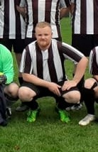
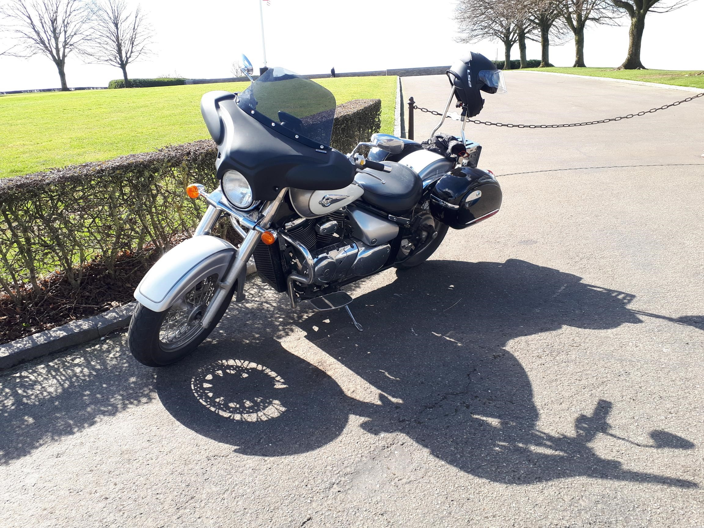

Wie ben ik?
Ik ben Tom Leysen, 32 jaar en samen met mijn geweldige vrouw ouders van 2 kindjes. Al heel mijn leven ben ik een fervent sporter. Hieronder vallen voetbal, lopen, fietsen en fitness. Onder het motto ‘Mens sana in corpore sano’ blijf ik dit volhouden en is dit ook erg belangrijk voor mij. Ik heb ook ongeveer 20 jaar in de Chiro gezeten, waarvan 9 jaar leiding. Daardoor heb ik veel sociale en leidinggevende skills ontwikkeld.
Motorrijden is ook een grote passie van mij. Zelf rijd ik op een “Suzuki Volusia VL800 ‘04”. Hiermee moeten jaarlijks natuurlijk de nodige kilometers gereden worden om hem in ere te houden.
 In 2018 ben ik opnieuw beginnen studeren voor boekhouden. Dit is altijd een interesse geweest van mij aangezien ik redelijk punctueel en goed met cijfers ben. Via avondonderwijs heb ik daar ook een diploma van behaald. Toch leek dit me gemakkelijker in een computerprogramma te steken dan het nu is. Daardoor is mijn interesse in IT massaal aangekweekt.
Momenteel volg ik een opleiding programmeren bij Thomas More die ik natuurlijk succesvol ga afmaken. De nodige discipline daarvoor vinden is nooit een probleem geweest voor mij. Persoonlijk kan ik niet wachten om op vlak van softwareontwikkeling mijn stempel te drukken op verschillende projecten. Maar hiervoor moet ik nog even geduld hebben.